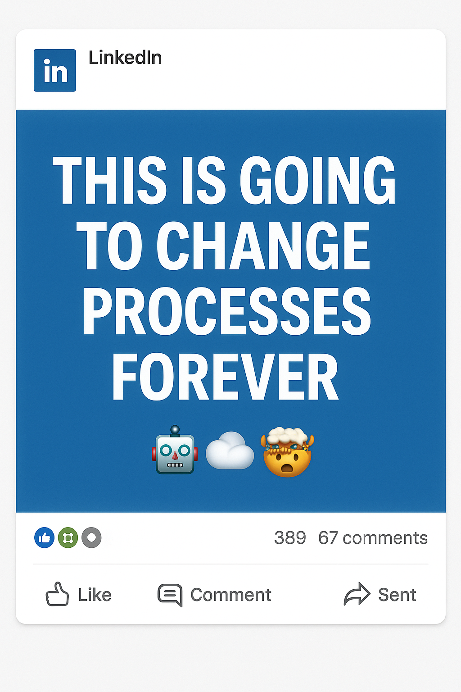
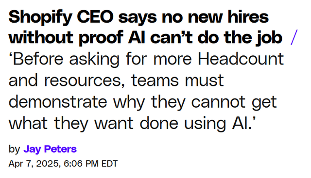
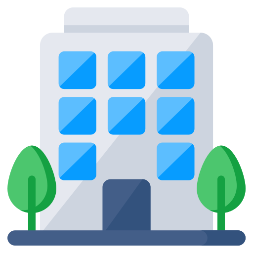

Software programs that can understand the environment, make decisions and take actions based on context, rules and requirements provided without human intervention.

Objective
Tasks to solve, requirements
Capabilities
AI Model(s) connected
Context
Information, Rules, Policies
Tools
Access to other software programs, functions & APIs, permissions
😵
Get PDF
Read PDF
Classify Documents by page range
Split into individual Documents
Extract Document Number
Validate if Document Number exists
Archive Document
Insert URL in System
How Organizations Scale with Separation of Concern

HR
IT
FC
OPS
Head of HR
 Payroll
People Dev
Recruiting
Payroll
People Dev
Recruiting
ONE AGENT ONE TOOL
AGENTIC ORGANISATION DESIGN PRINCIPLE
AGENTIC ORGANISATION DESIGN PRINCIPLE
Manager/Task Orchestrator
Receives task/request, plans & triages what to do, knows capabilities of team members
1
⋮
n
Team Member/Workflow Executor
Receives curated tasks and context, plans based on context & available tool
Scaling of Agents & Enablement of A2A Communications while introducing robust guardrails & observability.
Hook Layer
Invocation


Message Queue Layer
Route
Manager / Orchestrator Queue
1
n
Worker / Team Member Queue
Agent Layer
Execute
Objective
+
Model
+
Context
+
Tools
=
Next Action